PASSO 1 · IL BENVENUTO
Benvenuto a bordo.
Sette mondi operativi ti aspettano lungo la rotta.
Si entra da qui. Un pulsante solo, «Sali al ponte di comando». La navicella è il cursore, e sì: si muove.
Sistemi AI · progetto 1 · interno ad Appress Studio · catture vere, novembre 2026
Il sistema interno di Appress Studio. Prepara il lavoro, poi si ferma davanti a una persona.
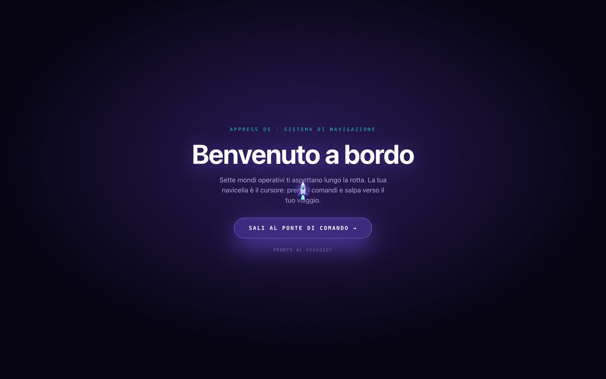
Capitolo 1 · come si apre · catture vere del servizio, novembre 2026
PASSO 1 · IL BENVENUTO
Sette mondi operativi ti aspettano lungo la rotta.
Si entra da qui. Un pulsante solo, «Sali al ponte di comando». La navicella è il cursore, e sì: si muove.
PASSO 2 · IL DECOLLO
Un passaggio animato di pochi secondi, poi la mappa. L'idea: entrare in un posto, non aprire un file.
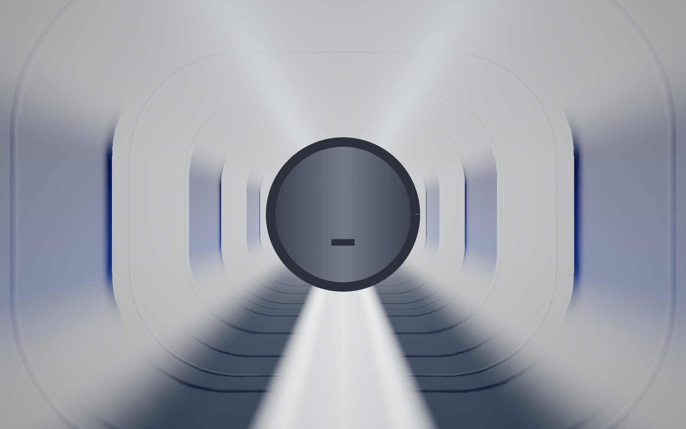
PIANETA 1 DI 7
Dalla pagina vera:
La mappa stellare dei flussi: ogni colonna una fase, dal decollo alla consegna.
In pratica legge i compiti da ClickUp e ne fa il piano della giornata, con fasce orarie e ore stimate.
Stato: pronta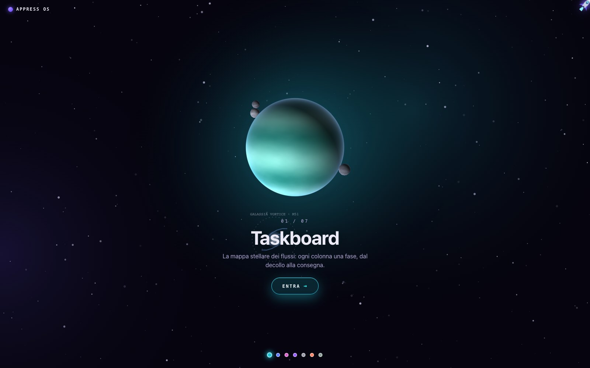
PIANETA 2 DI 7
Dalla pagina vera:
La costellazione dei clienti: tutti i mondi che segui, a portata di rotta.
Ogni cliente è una scheda con lo stato del piano editoriale. Da qui si entra nel suo spazio di lavoro.
Stato: pronta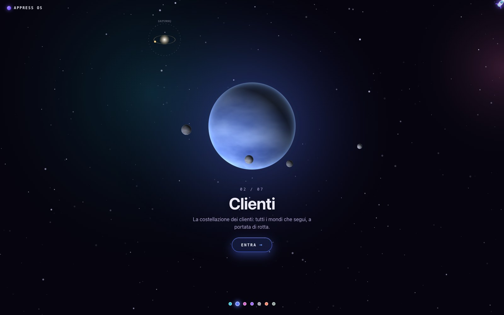
PIANETA 3 DI 7
Dalla pagina vera:
La sala di analisi: evidenze, vincoli e direzioni prima di decidere la rotta editoriale.
Propone il quadro strategico del mese in cinque tappe. Una persona lo conferma o lo corregge.
Stato: prototipo, dati demo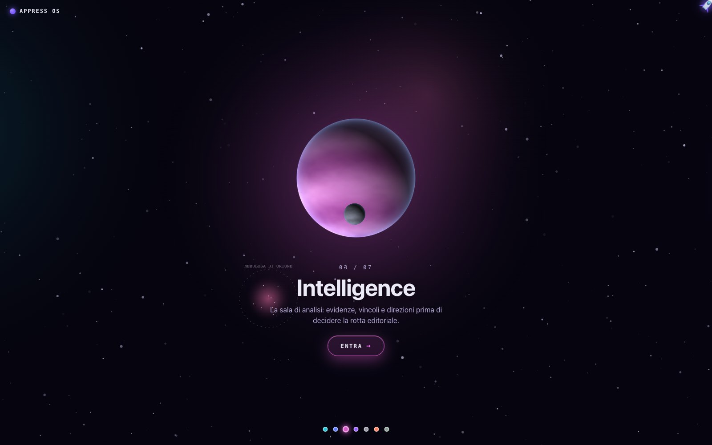
PIANETA 4 DI 7
Dalla pagina vera:
La camera di scrittura: impostazione, PED, contenuti e revisione, tutto in un posto.
Si sceglie il cliente e il mese, si scrive, si manda in revisione. Approvare il testo e pubblicarlo sono due sì diversi.
Stato: pronta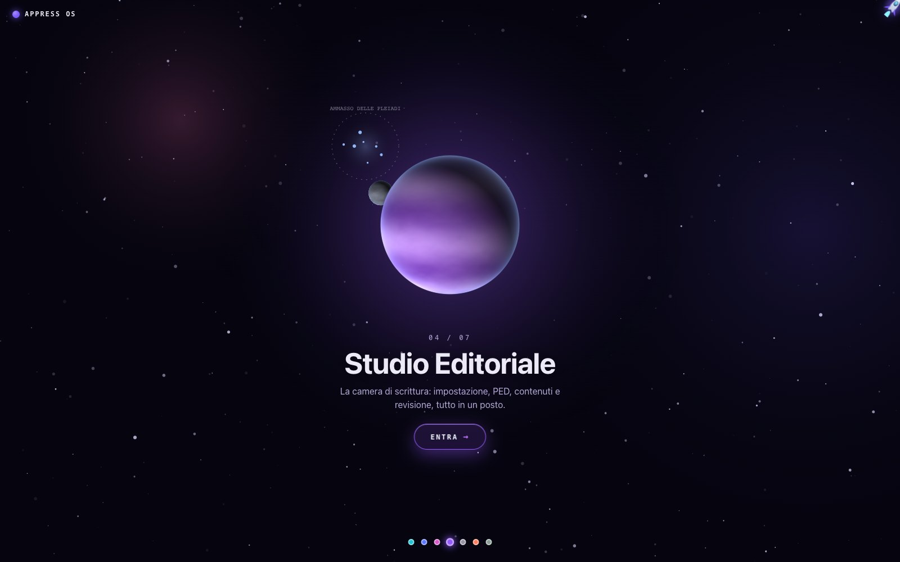
PIANETA 5 DI 7
Dalla pagina vera:
Qualità, controllo e performance dei contenuti e dei processi.
Sarà il pianeta della qualità e dei numeri. Sulla mappa c'è scritto «in arrivo», ed è la verità.
Stato: in arrivo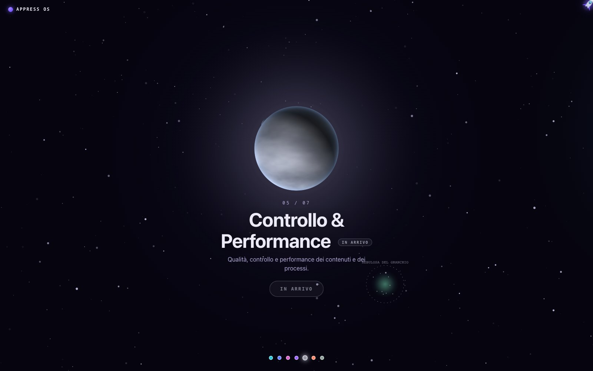
PIANETA 6 DI 7
Dalla pagina vera:
La rampa di lancio: i PED diventano post programmati su Instagram e Facebook, dopo l'approvazione.
Dentro c'è il Meta Publisher: importa il piano da Figma, prende i file dal NAS, programma solo dopo un sì.
Stato: pronta, pubblica davvero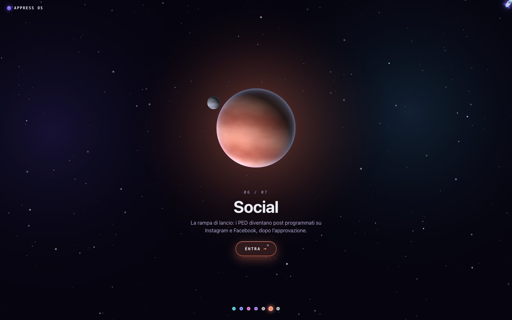
PIANETA 7 DI 7
Dalla pagina vera:
Report periodici e consegna finale al cliente.
Cinque passi, dalla preparazione allo storico. Il sistema prepara lo stato, una persona decide il passo.
Stato: pronta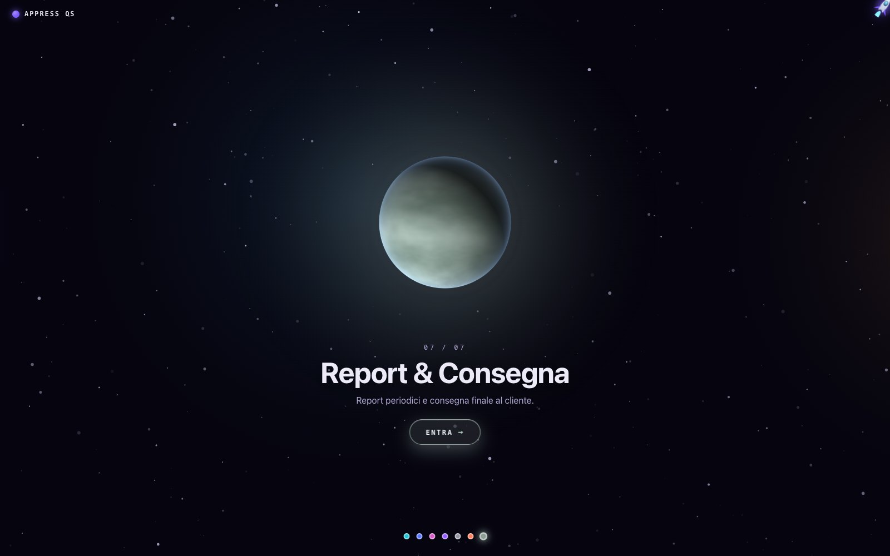
Capitolo 2 · le sezioni già pronte · sei livelli più uno bonus
Tutorial.
Le sezioni che funzionano già, una per livello, come il tutorial di un videogioco: tre suggerimenti sulla cattura vera e una mini prova da fare con le tue mani. I dati delle prove sono inventati, e lo scriviamo ogni volta.
Scorri per iniziare ↓
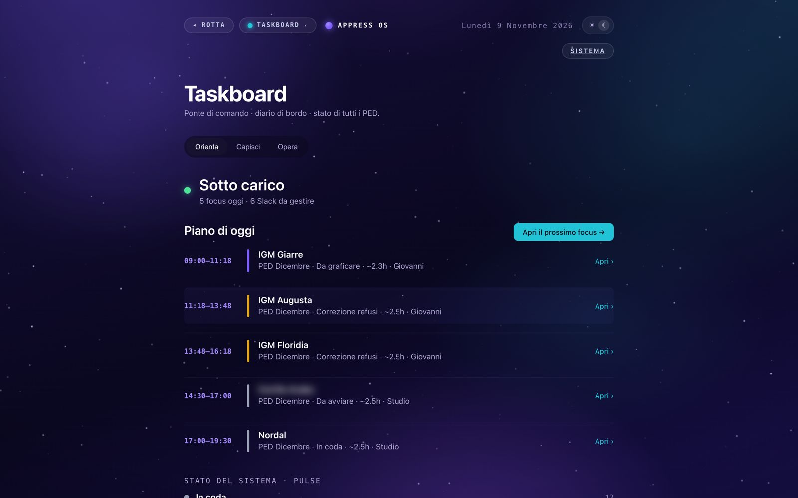
Livello 1 · Taskboard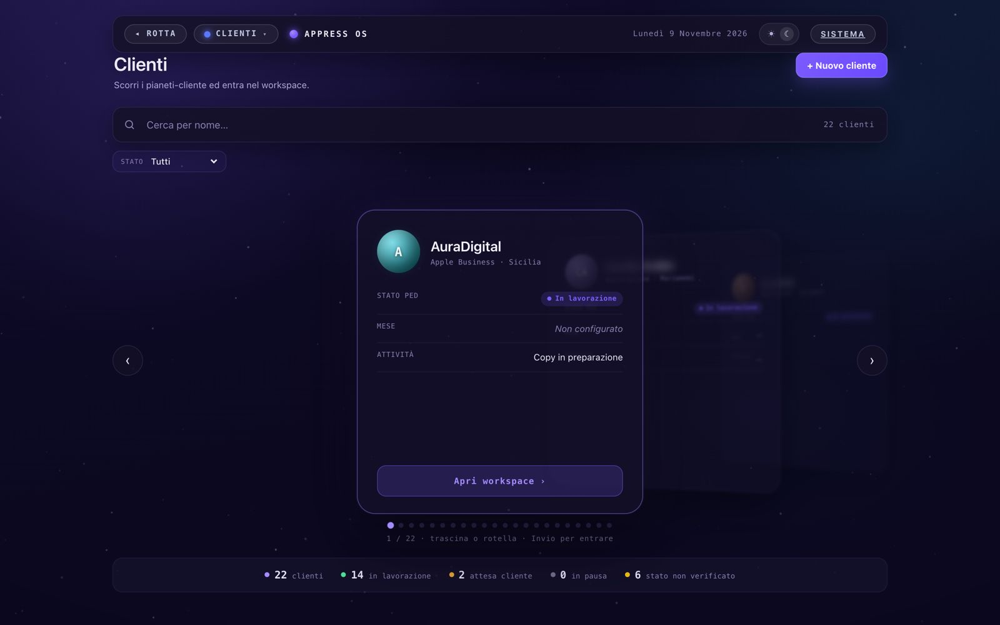
Livello 2 · Clienti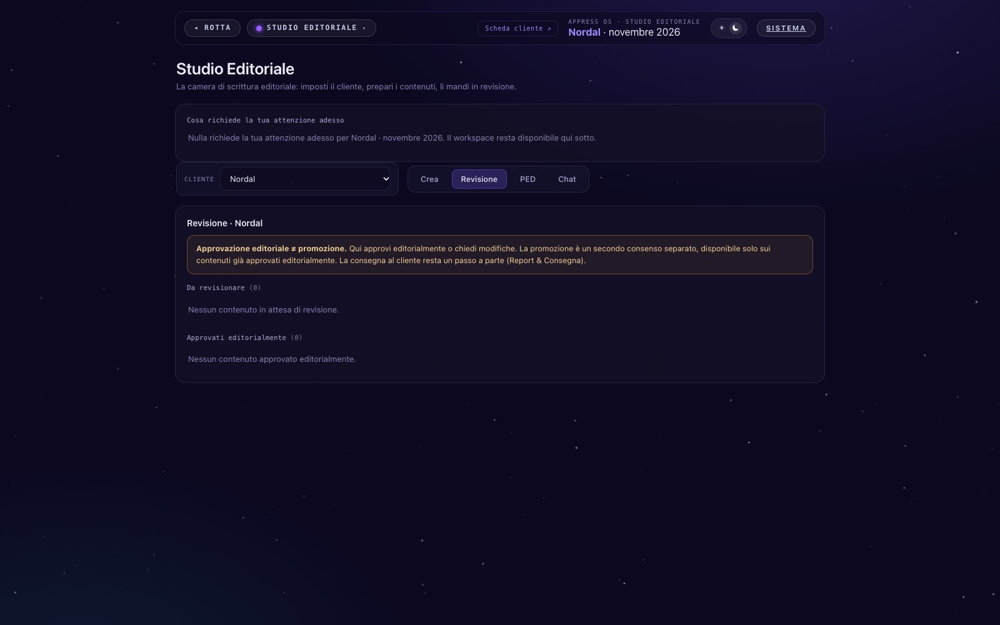
Livello 3 · Studio editoriale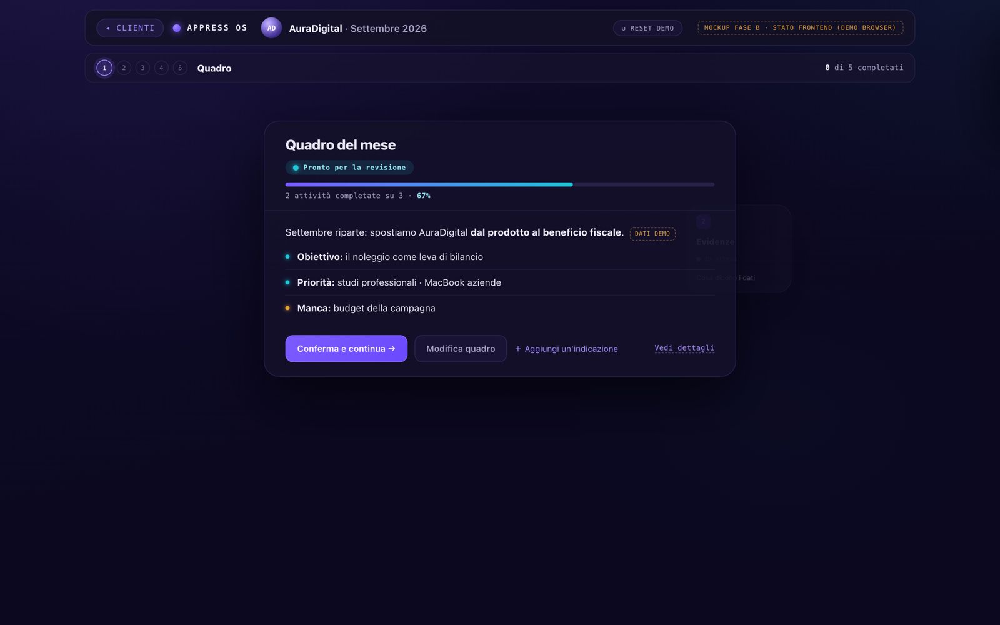
Livello 4 · Intelligence Livello 5 · Report e consegna
Livello 5 · Report e consegna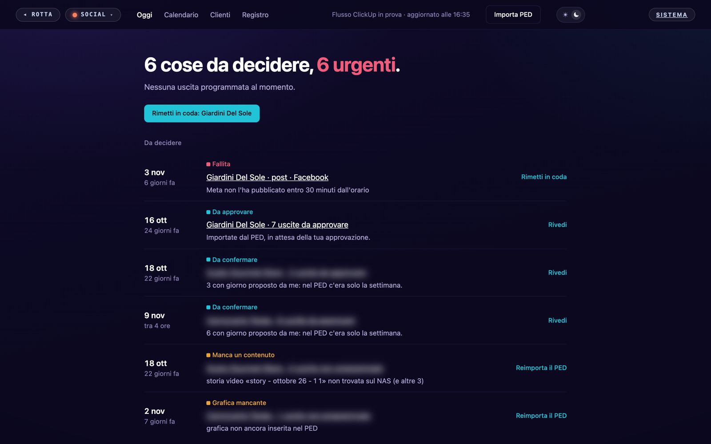
Livello 6 · SocialLIVELLO 1 DI 6 · TASKBOARD
Prove superate: {{score}} di 7
Legge i compiti da ClickUp e li mette in fila nella giornata, con le ore stimate. La mattina non si parte da una lista: si parte da un piano.
{{tbMsg}}
LIVELLO 2 DI 6 · CLIENTI
Prove superate: {{score}} di 7
Un carosello di schede: per ogni cliente lo stato del piano editoriale, il mese, l'attività in corso. Da qui si entra nel suo spazio di lavoro.
{{cliMsg}}
LIVELLO 3 DI 6 · STUDIO EDITORIALE
Prove superate: {{score}} di 7
Si sceglie un cliente e un mese, e tutto il lavoro di scrittura sta in quattro stanze. Prima di uscire, ogni contenuto passa dalla revisione.
{{edMsg}}
LIVELLO 4 DI 6 · INTELLIGENCE
Prove superate: {{score}} di 7
Prima di scrivere un mese di contenuti, il sistema propone un quadro: obiettivo, priorità, cosa manca. Una persona lo conferma o lo corregge, poi si passa alla tappa dopo.
{{qDone}} attività completate su 3
{{qMsg}}
LIVELLO 5 DI 6 · REPORT E CONSEGNA
Prove superate: {{score}} di 7
Dal periodo da chiudere alla consegna al cliente. Il sistema legge lo stato reale dei contenuti e prepara; il passo successivo lo decide una persona.
A
B
C
{{repState}}
{{repMsg}}
LIVELLO 6 DI 6 · SOCIAL
Prove superate: {{score}} di 7
Il pianeta Social contiene il Meta Publisher: importa il piano da Figma, prende i file dal NAS, mette tutto in calendario. Niente esce finché una persona non approva.
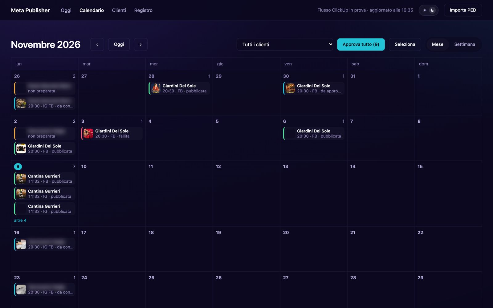
A B C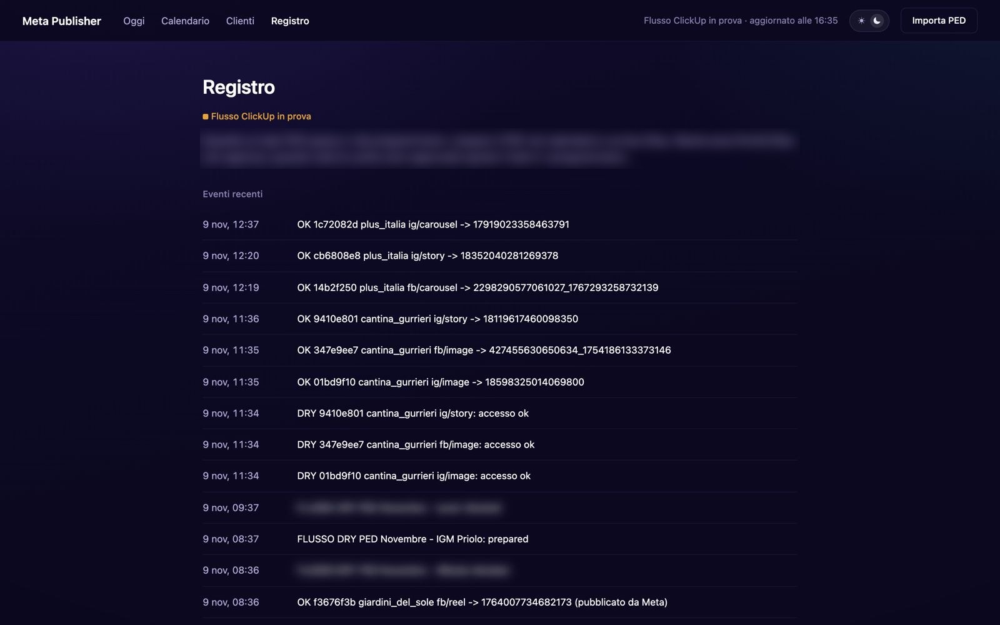
A B C{{pubMsg}}
LIVELLO BONUS · IL CONTROLLO
Prove superate: {{score}} di 7
Non è un pianeta: è una regola che vale in tutti. Ogni testo passa da un controllo refusi e da uno di sicurezza. Se manca un file o un dato, il sistema non lo inventa: lo segnala.
Questa settimana proviamo menù: primo, secondo e dolce della casa, tutto a . Prenota in DM.
{{ctrlMsg}}
Fine del tutorial · ora la mappa completa
Un unico sistema operativo per lo studio: una richiesta entra, diventa un compito, viene eseguita, controllata due volte, approvata da una persona, consegnata. L'etichetta nera è un compito che attraversa il giro.
Il giro si ferma al punto 6 finché una persona non dice sì.
Stato dalle memorie di progetto: servizio sempre acceso validato il 14 luglio 2026, controlla la coda ogni 15 secondi; presa automatica dalla chat sospesa dal 15 ottobre 2026; testi e video arrivano in fondo solo con un file di partenza, le immagini sì.
Domanda legittima
Un sistema che lavora per clienti veri non si può provare sui clienti veri. Quattro motivi, tutti successi davvero.
Ogni passo che tocca un cliente ha un cancello: il sistema prepara, una persona approva. Mettere un pulsante «Approva» è facile. Costruire tutto il resto in modo che nessun automatismo lo scavalchi mai richiede prove su prove, e ogni pianeta nuovo le rifà da capo.
Regola del sistemaPer pubblicare servono accessi veri alle pagine dei clienti. Ogni chiave ha regole precise su cosa può fare, i file dei clienti non passano da servizi esterni e ogni modifica che tocca la sicurezza viene provata da sola, prima di essere attivata con un sì separato.
Regola del sistemaIl lavoro vive in posti diversi: i compiti su ClickUp, i piani su Figma, le foto e i video sul NAS dello studio. Ognuno ha le sue manie. La data di un post si legge da una casella sopra la caption, mai dal nome del riquadro; le immagini si ritrovano sul NAS confrontandole con l'originale di Figma. Ogni fonte va capita prima di fidarsi.
Tre fonti, un solo sistemaPrima la prova a secco, poi l'uscita vera. Ogni pianeta nasce con dati demo dichiarati, passa dalle prove e solo dopo legge i dati veri. E quando un automatismo crea più lavoro di quanto ne tolga si spegne, finché non è pronto: per questo la presa delle richieste dalla chat oggi è ferma.
Sette pianeti, uno alla voltaAccesso anticipato
Caricamento del sistema finale88%, il resto lo decide una persona
Come ogni gioco serio esce in accesso anticipato. A differenza dei giochi seri, il boss finale è un'approvazione.